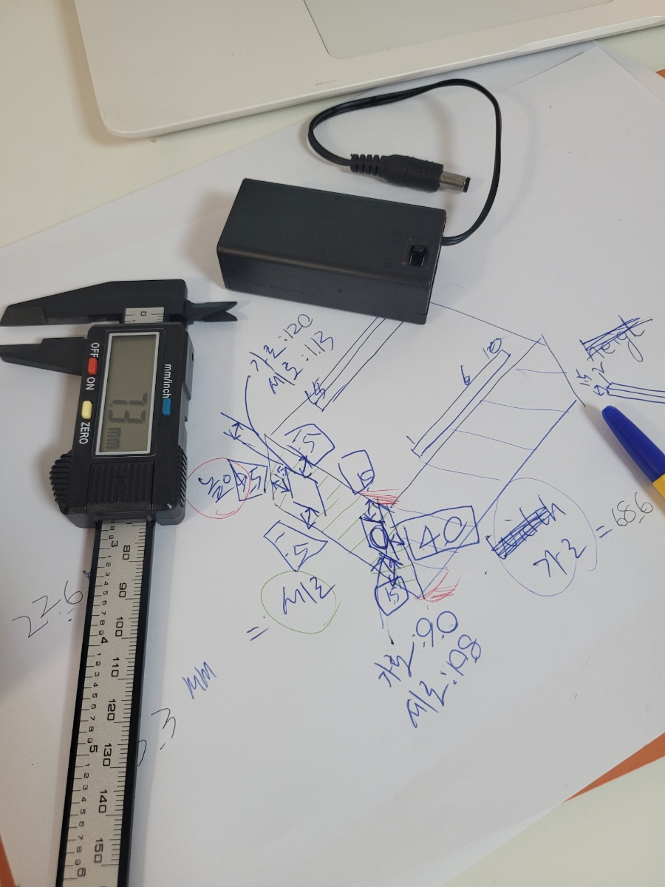
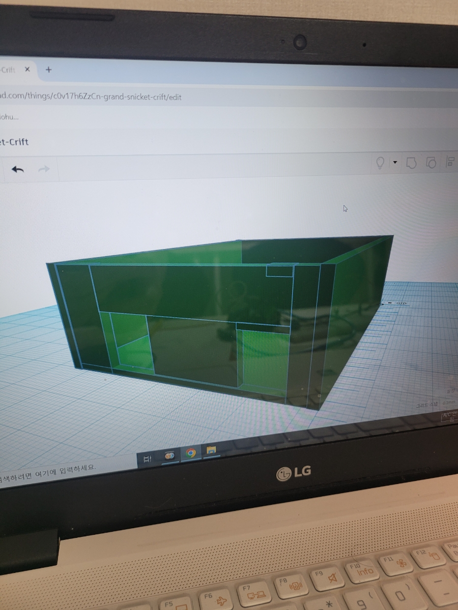
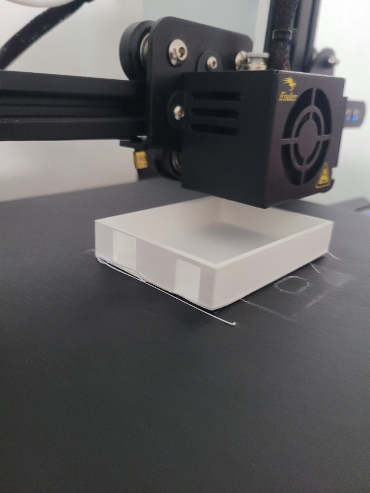
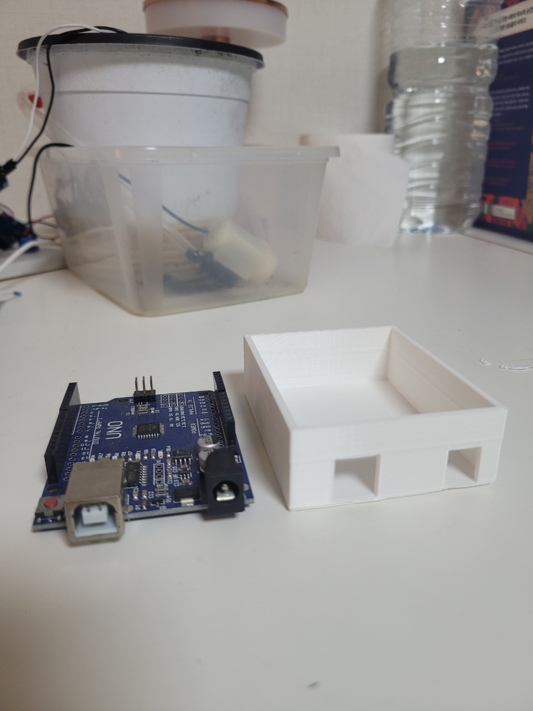

나만의 아두이노 케이스 만들기! 3D 프린팅 실습 현장
코딩도장에서는 학생들이 직접 아이디어를 현실로 만드는 메이커 교육을 진행하고 있습니다. 이번 시간에는 3D 모델링과 3D 프린팅 기술을 활용하여 자신만의 아두이노 케이스를 제작하는 특별한 실습이 있었습니다. 그 생생한 과정을 함께 살펴보시죠!
1. 아이디어 구상 및 모델링 준비
먼저, 각자 만들고 싶은 아두이노 케이스의 컨셉을 정하고 스케치하는 시간을 가졌습니다. 어떤 모양으로 만들지, 어떤 기능을 추가할지 자유롭게 아이디어를 나누었습니다. 이후 팅커캐드(Tinkercad)와 같은 사용자 친화적인 3D 모델링 툴 사용법을 익히며 본격적인 디자인 작업에 돌입했습니다. 처음 접하는 학생들도 금방 재미를 붙이며 자신만의 아이디어를 3차원 공간에 표현하기 시작했습니다.
2. 정밀한 측정이 기본! 아두이노 사이즈 측정
정확한 케이스 설계를 위해서는 아두이노 보드의 크기를 정확히 아는 것이 중요합니다. 학생들은 버니어캘리퍼스를 사용하여 아두이노 우노 보드의 가로, 세로, 높이뿐만 아니라 USB 포트, 전원 잭 등 주요 부품의 위치까지 꼼꼼하게 측정했습니다. 작은 오차도 허용하지 않겠다는 진지한 눈빛으로 측정에 임하는 모습이 인상적이었습니다. 이 과정을 통해 실제 제품 설계에서 정밀 측정의 중요성을 배울 수 있었습니다.
"직접 재보고 만져보니 아두이노 구조가 더 잘 이해돼요! 케이스 만들 때 실수하지 않을 것 같아요." - 참가 학생 A
3. 3D 모델링 툴으로 케이스 디자인하기
측정한 치수를 바탕으로 3D 모델링 툴에서 본격적인 케이스 디자인 작업을 진행했습니다. 기본 도형을 조합하고 변형하며 자신만의 독창적인 케이스를 만들어 나갔습니다. 단순히 네모난 상자를 넘어, 캐릭터 모양, 로봇 모양 등 학생들의 창의적인 아이디어가 돋보이는 디자인들이 탄생했습니다. 색상과 텍스처를 입히는 과정에서는 마치 실제 제품을 만드는 디자이너가 된 듯한 즐거움을 느꼈습니다.
4. 아이디어가 현실로! 3D 프린터로 출력
드디어 학생들이 디자인한 3D 모델링 파일(.stl)을 3D 프린터로 전송하여 출력을 시작했습니다. 큐라(Cura)와 같은 슬라이싱 프로그램을 통해 프린팅 설정을 마치고, 필라멘트가 녹아 한 층 한 층 쌓이며 점차 형태를 갖춰가는 모습을 신기하게 바라보았습니다. 자신의 디지털 디자인이 물리적인 형태로 만들어지는 과정을 직접 목격하며 학생들은 기술의 힘을 실감했습니다.
5. 드디어 완성! 나만의 아두이노 케이스
몇 시간의 기다림 끝에 드디어 각자의 개성이 담긴 아두이노 케이스가 완성되었습니다! 직접 디자인하고 만든 결과물을 손에 쥔 학생들의 얼굴에는 뿌듯함과 성취감이 가득했습니다. 완성된 케이스에 아두이노 보드를 장착해보고, 서로의 작품을 감상하며 아이디어를 공유하는 시간도 가졌습니다. 이번 3D 프린팅 실습을 통해 학생들은 디지털 제조 기술의 원리를 이해하고, 문제 해결 능력과 창의력을 한층 더 키울 수 있는 소중한 경험을 했습니다.
